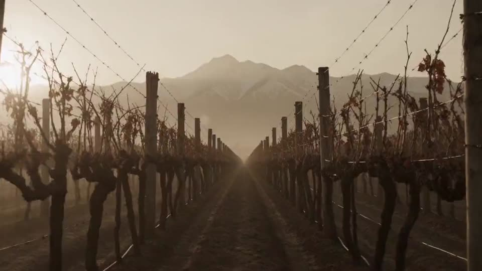
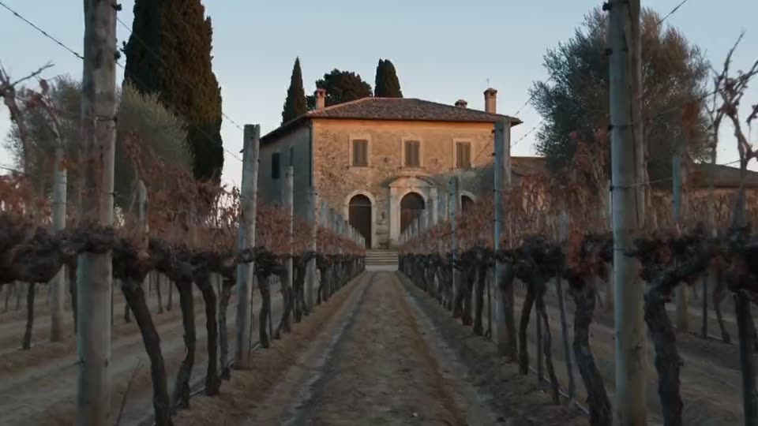
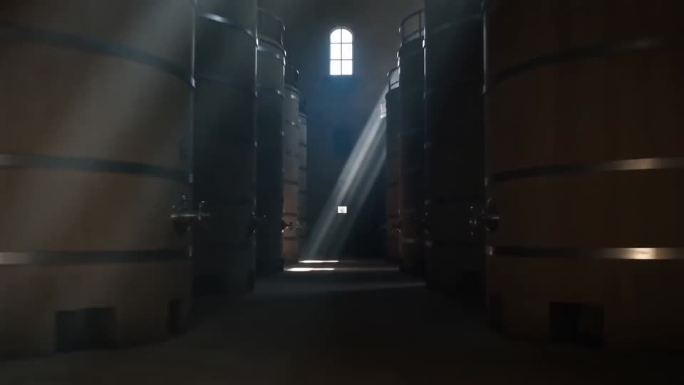
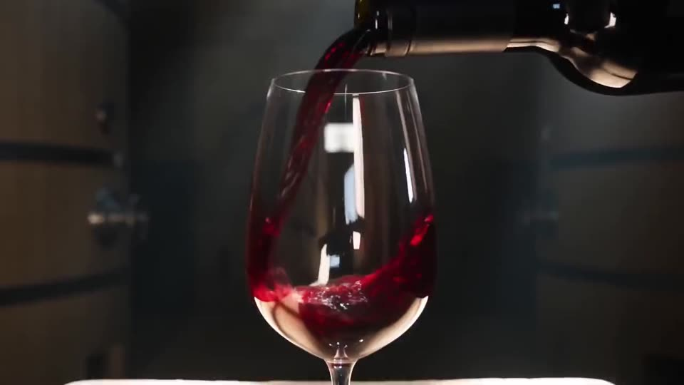

01
El viñedo
Mayor Drummond, Luján de Cuyo: el lugar donde todo comenzó en 1931.
0% · Preparando el recorrido

Reserva tu visita01 Mayor Drummond, Luján de Cuyo
Carmine Granata, inmigrante italiano, fundó la bodega en Mayor Drummond, Luján de Cuyo, dando inicio a una gran tradición vitivinícola.
02 La casona
La antigua casona patronal funcionó durante años como la escuela Paula Albarracín de Sarmiento. Hoy, esos mismos espacios llenos de historia albergan nuestras salas de degustación.
03 Las piletas
En la visita se recorren las emblemáticas piletas de cemento construidas a principios del siglo pasado y un museo con maquinaria histórica de la elaboración del vino.
04 La familia
Hoy, la tercera y cuarta generación de la familia mantienen vivo el legado, elaborando vino exactamente en el mismo lugar donde todo comenzó.
Nuestra filosofía
Hay lugares donde el tiempo se mide en cosechas. Donde la tierra, la luz y la paciencia hacen su trabajo, y el vino solo tiene que llegar a la copa.
El recorrido

Mayor Drummond, Luján de Cuyo: el lugar donde todo comenzó en 1931.

La antigua casona patronal, que fue escuela, hoy alberga las salas de degustación.

Piletas de cemento de principios del siglo pasado y un museo de maquinaria histórica.

Vino elaborado por la tercera y cuarta generación, en el mismo lugar donde todo comenzó.
Visitas y degustaciones
Las emblemáticas piletas construidas a principios del siglo pasado.
Maquinaria histórica de la elaboración del vino.
En la antigua casona patronal, donde funcionó la escuela Paula Albarracín de Sarmiento.
Reservas
Escríbenos para coordinar tu visita y degustación.